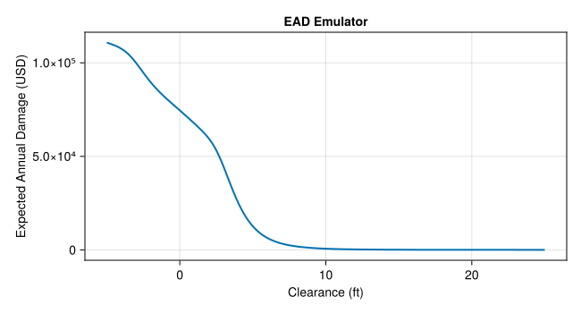
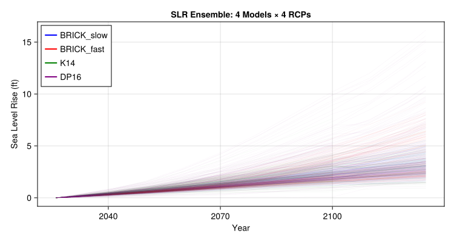
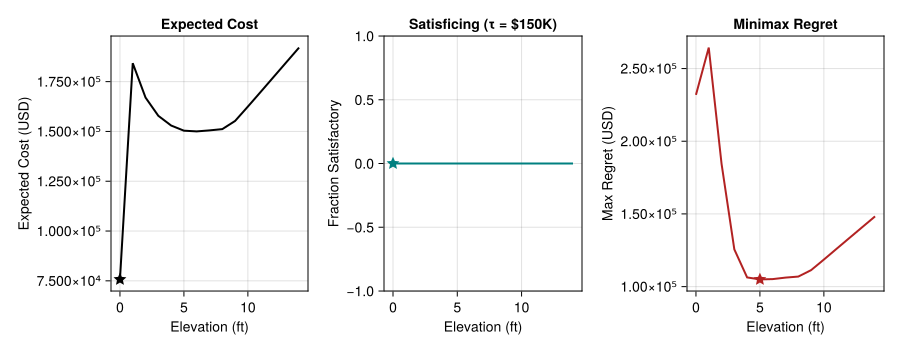
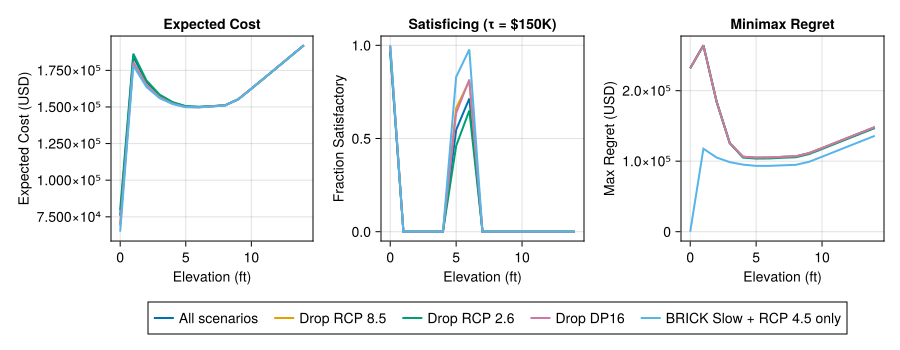
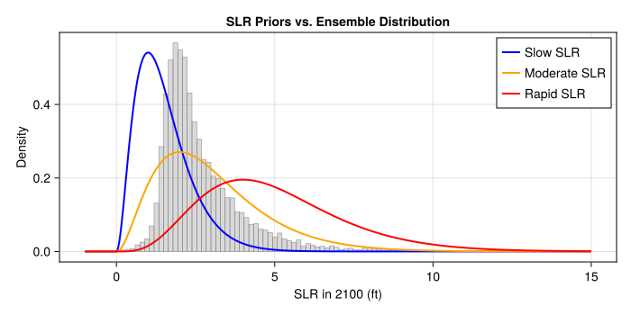
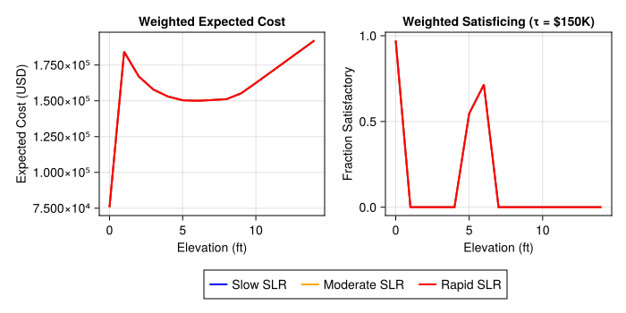

if !isfile("Manifest.toml")
import Pkg
Pkg.instantiate()
end
using CairoMakie
using CSV
using DataFrames
using Distributions
using Interpolations
using NetCDF
using Random
using Statistics
using YAXArrays
using DimensionalData: dims
include("house_elevation.jl")Lab 7: Robustness Metrics
CEVE 421/521
Draft Material
This content is under development and subject to change.
1 Overview
In Lab 6 you computed the value of information for a homeowner deciding how high to elevate their house. That analysis used two SLR scenarios (RCP 2.6 and RCP 8.5) and assumed a 50/50 prior.
But what if we don’t trust those probabilities? What if someone asks: “will this decision still work if we’re wrong about the future?” That’s a question about robustness.
Today you’ll evaluate the house elevation decision against 10,000 sea-level rise trajectories spanning four physical models and four emissions pathways. You’ll compute robustness metrics that don’t require probabilities, discover that these metrics are sensitive to which scenarios you include, and then apply a principled weighting approach to make the subjective assumptions transparent.
References:
2 Before Lab
Complete these steps BEFORE coming to lab:
Accept the GitHub Classroom assignment (link on Canvas)
Clone your repository:
git clone https://github.com/CEVE-421-521/lab-07-S26-yourusername.git cd lab-07-S26-yourusernameOpen the notebook in VS Code or Quarto preview
Run the first code cell — it will install any missing packages (may take 10-15 minutes the first time)
Submission: You will render this notebook to PDF and submit the PDF to Canvas. See Section 8 for details.
Computation note: This lab uses a pre-built EAD emulator, so evaluating all 10,000 trajectories across all elevation heights takes only a few seconds.
3 Setup
Run the cells in this section to load packages, build the house model, and load the SLR data. You don’t need to modify any of this code — just run it and read the comments to understand what it does.
3.1 Packages
3.2 House and Surge Model
Same house and storm surge distribution as Lab 6: a single-story home in Norfolk, VA with no basement, valued at $250,000, sitting 8 ft above the tide gauge. We hold the storm surge distribution fixed (GEV with \(\mu=3\), \(\sigma=1\), \(\xi=0.15\)) so we can isolate the effect of SLR uncertainty.
House and surge setup (click to expand)
haz_fl_dept = CSV.read("data/haz_fl_dept.csv", DataFrame)
ddf_row = filter(r -> r.DmgFnId == 105, haz_fl_dept)[1, :]
house = House(
ddf_row;
value_usd=250_000,
area_ft2=1_500,
height_above_gauge_ft=8.0,
)
surge_dist = GeneralizedExtremeValue(3.0, 1.0, 0.15)3.3 EAD Emulator
Rather than recomputing the trapezoidal EAD integral for every (trajectory, year, elevation) combination, we pre-compute EAD as a function of clearance (house floor height above sea level) and interpolate. This turns an expensive integral into a fast table lookup.
EAD emulator construction (click to expand)
ead_emulator = build_ead_emulator(house, surge_dist)let
clearances = range(-5, 25; length=200)
eads = ead_emulator.(clearances)
fig = Figure(; size=(650, 350))
ax = Axis(fig[1, 1]; xlabel="Clearance (ft)", ylabel="Expected Annual Damage (USD)", title="EAD Emulator")
lines!(ax, collect(clearances), eads; linewidth=2)
fig
end
3.4 SLR Trajectories
We load 10,000 sea-level rise trajectories from four physical models and four emissions pathways. The four physical models differ in how they represent ice sheet dynamics:
- BRICK Slow: Conservative ice sheet response (Wong et al., 2017)
- BRICK Fast: Rapid ice sheet dynamics (Wong et al., 2017)
- K14: Kopp et al. (2014) probabilistic projections (Kopp et al., 2014)
- DP16: DeConto & Pollard (2016) — fast Antarctic ice sheet collapse (DeConto & Pollard, 2016)
Each model is run under four RCP scenarios (2.6, 4.5, 6.0, 8.5), yielding 16 model-scenario combinations with 625 trajectories each.
ds = open_dataset("data/slr_scenarios.nc")const M_TO_FT = 3.28084
const MODEL_NAMES = ["BRICK_slow", "BRICK_fast", "K14", "DP16"]
const RCP_NAMES = ["rcp26", "rcp45", "rcp60", "rcp85"]
slr_m = Array(ds.slr[:, :]) # (time, trajectory) in meters
model_ids = Int.(Array(ds.model_id[:]))
rcp_ids = Int.(Array(ds.rcp_id[:]))
slr_years = Int.(Array(ds.time[:])) # 2026:2125
n_traj = size(slr_m, 2)
println("Loaded $n_traj SLR trajectories, $(length(slr_years)) years")let
fig = Figure(; size=(750, 400))
ax = Axis(fig[1, 1]; xlabel="Year", ylabel="Sea Level Rise (ft)", title="SLR Ensemble: 4 Models × 4 RCPs")
colors = [:blue, :red, :green, :purple]
for mid in 1:4
mask = model_ids .== mid
trajs_ft = slr_m[:, mask] .* M_TO_FT
# Plot a random subset for readability
n_plot = min(200, size(trajs_ft, 2))
idxs = randperm(size(trajs_ft, 2))[1:n_plot]
for j in idxs
lines!(ax, slr_years, trajs_ft[:, j]; color=(colors[mid], 0.05), linewidth=0.5)
end
# Dummy line for legend (use NaN to avoid affecting axis limits)
lines!(ax, [NaN], [NaN]; color=colors[mid], linewidth=2, label=MODEL_NAMES[mid])
end
axislegend(ax; position=:lt)
fig
end
3.5 Performance Table
The function below computes the total cost (investment + discounted lifetime damages) for a given elevation height across all 10,000 SLR trajectories. We then sweep over a grid of elevation heights (0 to 14 ft) and stack the results into a single DataFrame called perf.
Each row of perf represents one (elevation, trajectory) combination with columns:
:elevation_ft— how high we elevate (0–14 ft):modeland:rcp— which physical model and emissions scenario:trajectory— trajectory index (1–10,000):investment— one-time construction cost:expected_damage— discounted lifetime damages under this SLR trajectory:total_cost— investment + expected damage (the number we want to minimize)
const DISCOUNT_RATE = 0.04
const PLAN_START = 2026
const PLAN_END = 2100
const PLAN_IDX = findfirst(==(PLAN_START), slr_years):findfirst(==(PLAN_END), slr_years)
const PLAN_YEARS = slr_years[PLAN_IDX]Performance function (click to expand)
"""
Compute performance for one elevation height across all trajectories.
Returns a DataFrame with one row per trajectory.
"""
function calculate_performance(h_ft, house, slr_m, model_ids, rcp_ids)
investment = elevation_cost(house, h_ft)
n = size(slr_m, 2)
results = Vector{NamedTuple}(undef, n)
for j in 1:n
led = 0.0
for (i, year) in enumerate(PLAN_YEARS)
slr_ft = slr_m[PLAN_IDX[i], j] * M_TO_FT
clearance = house.height_above_gauge_ft + h_ft - slr_ft
ead = ead_emulator(clearance)
led += ead / (1.0 + DISCOUNT_RATE)^(year - PLAN_START)
end
results[j] = (
elevation_ft=h_ft,
model=MODEL_NAMES[model_ids[j]],
rcp=RCP_NAMES[rcp_ids[j]],
trajectory=j,
investment=investment,
expected_damage=led,
total_cost=investment + led,
)
end
return DataFrame(results)
endMain.Notebook.calculate_performanceheight_grid = 0:1:14
perf = vcat([calculate_performance(h, house, slr_m, model_ids, rcp_ids) for h in height_grid]...)
println("Performance table: $(nrow(perf)) rows ($(length(height_grid)) heights × $n_traj trajectories)")4 Act 1: Unweighted Robustness
With the perf table in hand, we can compute robustness metrics that treat every trajectory equally. We’ll compute three metrics from Herman et al. (2015). All three answer the question “which elevation is best?” — but they define “best” differently.
4.1 Expected Cost
The simplest metric: the mean total cost across all trajectories. \[ \bar{C}(h) = \frac{1}{N} \sum_{j=1}^{N} C(h, s_j) \]
The code below uses groupby to split perf by elevation height, then combine to compute the mean of :total_cost within each group. This is the DataFrames equivalent of a SQL GROUP BY with an aggregate function.
expected_costs = combine(
groupby(perf, :elevation_ft),
:total_cost => mean => :expected_cost,
)15×2 DataFrame
| Row | elevation_ft | expected_cost |
|---|---|---|
| Int64 | Float64 | |
| 1 | 0 | 75709.9 |
| 2 | 1 | 1.84259e5 |
| 3 | 2 | 1.66994e5 |
| 4 | 3 | 1.57834e5 |
| 5 | 4 | 152966.0 |
| 6 | 5 | 1.50381e5 |
| 7 | 6 | 150020.0 |
| 8 | 7 | 1.50525e5 |
| 9 | 8 | 1.5116e5 |
| 10 | 9 | 1.55258e5 |
| 11 | 10 | 1.62474e5 |
| 12 | 11 | 1.69843e5 |
| 13 | 12 | 1.77268e5 |
| 14 | 13 | 1.84684e5 |
| 15 | 14 | 1.92092e5 |
4.2 Satisficing
What fraction of trajectories keep total cost below a threshold \(\tau\)? \[ R_{\text{sat}}(h; \tau) = \frac{1}{N} \sum_{j=1}^{N} \mathbb{1}\left[C(h, s_j) < \tau\right] \]
Higher is better — we want a decision that “works” in as many futures as possible.
The function below has the same structure as expected_costs above, but instead of mean(costs) you need to compute the fraction of costs below the threshold.
τ = 150_000 # cost threshold (USD)150000The function below computes satisficing, but it has a bug: it always returns 0.0 instead of the actual fraction. Your task: fix the line marked FIX ME so that frac equals the fraction of costs below τ. The function runs as-is (so the notebook renders), but the satisficing plot will be flat at zero until you fix it.
function satisficing(df, τ)
combine(groupby(df, :elevation_ft)) do gdf
costs = gdf.total_cost
frac = 0.0 # FIX ME: compute the fraction of costs below τ
(fraction_satisfactory=frac,)
end
endsatisficing (generic function with 1 method)
NoteHint
costs .< τ gives a vector of true/false. Taking the mean of a Boolean vector gives the fraction that are true. So: frac = mean(costs .< τ).
sat_results = satisficing(perf, τ)15×2 DataFrame
| Row | elevation_ft | fraction_satisfactory |
|---|---|---|
| Int64 | Float64 | |
| 1 | 0 | 0.0 |
| 2 | 1 | 0.0 |
| 3 | 2 | 0.0 |
| 4 | 3 | 0.0 |
| 5 | 4 | 0.0 |
| 6 | 5 | 0.0 |
| 7 | 6 | 0.0 |
| 8 | 7 | 0.0 |
| 9 | 8 | 0.0 |
| 10 | 9 | 0.0 |
| 11 | 10 | 0.0 |
| 12 | 11 | 0.0 |
| 13 | 12 | 0.0 |
| 14 | 13 | 0.0 |
| 15 | 14 | 0.0 |
NoteHint
costs .< τ gives a vector of true/false. Taking the mean of a Boolean vector gives the fraction that are true.
4.3 Minimax Regret
Regret measures how much worse your choice is compared to the best possible choice in that particular future. For each trajectory \(j\), the best possible cost is \(C^*(s_j) = \min_{h'} C(h', s_j)\). \[ \text{Regret}(h, s_j) = C(h, s_j) - C^*(s_j) \]
Minimax regret finds the elevation that minimizes the worst-case regret: \[ R_{\text{regret}}(h) = \max_j \text{Regret}(h, s_j) \]
The code below computes this in three steps:
- For each trajectory, find the minimum cost across all elevation heights (the “best you could have done” in that future)
- Join that back to
perfand compute regret as the difference - For each elevation, take the maximum regret across all trajectories
# Step 1: best possible cost in each trajectory
best_per_traj = combine(groupby(perf, :trajectory), :total_cost => minimum => :best_cost)
# Step 2: join back and compute regret
perf_with_regret = leftjoin(perf, best_per_traj; on=:trajectory)
perf_with_regret.regret = perf_with_regret.total_cost .- perf_with_regret.best_cost
# Step 3: worst-case regret for each elevation
regret_results = combine(
groupby(perf_with_regret, :elevation_ft),
:regret => maximum => :max_regret,
)15×2 DataFrame
| Row | elevation_ft | max_regret |
|---|---|---|
| Int64 | Float64 | |
| 1 | 0 | 2.31887e5 |
| 2 | 1 | 2.64408e5 |
| 3 | 2 | 1.84533e5 |
| 4 | 3 | 125601.0 |
| 5 | 4 | 1.06312e5 |
| 6 | 5 | 1.04949e5 |
| 7 | 6 | 1.05162e5 |
| 8 | 7 | 1.06191e5 |
| 9 | 8 | 1.06901e5 |
| 10 | 9 | 1.11328e5 |
| 11 | 10 | 1.18597e5 |
| 12 | 11 | 1.2606e5 |
| 13 | 12 | 1.33493e5 |
| 14 | 13 | 1.409e5 |
| 15 | 14 | 1.48302e5 |
4.4 Comparing the Three Metrics
let
fig = Figure(; size=(900, 350))
hg = collect(height_grid)
# Expected cost
ax1 = Axis(fig[1, 1]; xlabel="Elevation (ft)", ylabel="Expected Cost (USD)", title="Expected Cost")
ec = expected_costs.expected_cost
lines!(ax1, hg, ec; linewidth=2, color=:black)
idx = argmin(ec)
scatter!(ax1, [hg[idx]], [ec[idx]]; color=:black, markersize=15, marker=:star5)
# Satisficing
ax2 = Axis(fig[1, 2]; xlabel="Elevation (ft)", ylabel="Fraction Satisfactory", title="Satisficing (τ = \$$(τ÷1000)K)")
sf = sat_results.fraction_satisfactory
lines!(ax2, hg, sf; linewidth=2, color=:teal)
idx = argmax(sf)
scatter!(ax2, [hg[idx]], [sf[idx]]; color=:teal, markersize=15, marker=:star5)
# Minimax regret
ax3 = Axis(fig[1, 3]; xlabel="Elevation (ft)", ylabel="Max Regret (USD)", title="Minimax Regret")
mr = regret_results.max_regret
lines!(ax3, hg, mr; linewidth=2, color=:firebrick)
idx = argmin(mr)
scatter!(ax3, [hg[idx]], [mr[idx]]; color=:firebrick, markersize=15, marker=:star5)
fig
end
5 Act 2: Sensitivity to Scenario Selection
The robustness metrics above treated all 10,000 trajectories equally. But the set of trajectories we included was itself a choice — we picked 4 models and 4 RCPs. What happens if we change that choice?
No new simulations needed — we just filter the perf DataFrame to keep only certain models or RCPs, then recompute the same metrics on each subset. The function compute_metrics wraps up the three metric computations from Act 1 so we can apply them to different subsets easily.
compute_metrics function (click to expand)
function compute_metrics(df, τ)
ec = combine(groupby(df, :elevation_ft), :total_cost => mean => :expected_cost)
sat = combine(groupby(df, :elevation_ft), :total_cost => (c -> mean(c .< τ)) => :fraction_satisfactory)
best = combine(groupby(df, :trajectory), :total_cost => minimum => :best_cost)
df_r = leftjoin(df, best; on=:trajectory)
df_r.regret = df_r.total_cost .- df_r.best_cost
reg = combine(groupby(df_r, :elevation_ft), :regret => maximum => :max_regret)
return (expected_cost=ec, satisficing=sat, regret=reg)
endcompute_metrics (generic function with 1 method)subsets = [
("All scenarios", perf),
("Drop RCP 8.5", filter(r -> r.rcp != "rcp85", perf)),
("Drop RCP 2.6", filter(r -> r.rcp != "rcp26", perf)),
("Drop DP16", filter(r -> r.model != "DP16", perf)),
("BRICK Slow + RCP 4.5 only", filter(r -> r.model == "BRICK_slow" && r.rcp == "rcp45", perf)),
]5-element Vector{Tuple{String, DataFrame}}:
("All scenarios", 150000×7 DataFrame
Row │ elevation_ft model rcp trajectory investment expected_d ⋯
│ Int64 String String Int64 Float64 Float64 ⋯
────────┼───────────────────────────────────────────────────────────────────────
1 │ 0 BRICK_fast rcp26 1 0.0 5981 ⋯
2 │ 0 BRICK_fast rcp26 2 0.0 7405
3 │ 0 BRICK_fast rcp26 3 0.0 6249
4 │ 0 BRICK_fast rcp26 4 0.0 6054
5 │ 0 BRICK_fast rcp26 5 0.0 6012 ⋯
6 │ 0 BRICK_fast rcp26 6 0.0 5695
7 │ 0 BRICK_fast rcp26 7 0.0 6170
8 │ 0 BRICK_fast rcp26 8 0.0 6132
⋮ │ ⋮ ⋮ ⋮ ⋮ ⋮ ⋮ ⋱
149994 │ 14 K14 rcp85 9994 191370.0 74 ⋯
149995 │ 14 K14 rcp85 9995 191370.0 72
149996 │ 14 K14 rcp85 9996 191370.0 72
149997 │ 14 K14 rcp85 9997 191370.0 73
149998 │ 14 K14 rcp85 9998 191370.0 71 ⋯
149999 │ 14 K14 rcp85 9999 191370.0 71
150000 │ 14 K14 rcp85 10000 191370.0 69
2 columns and 149985 rows omitted)
("Drop RCP 8.5", 112500×7 DataFrame
Row │ elevation_ft model rcp trajectory investment expected_d ⋯
│ Int64 String String Int64 Float64 Float64 ⋯
────────┼───────────────────────────────────────────────────────────────────────
1 │ 0 BRICK_fast rcp26 1 0.0 5981 ⋯
2 │ 0 BRICK_fast rcp26 2 0.0 7405
3 │ 0 BRICK_fast rcp26 3 0.0 6249
4 │ 0 BRICK_fast rcp26 4 0.0 6054
5 │ 0 BRICK_fast rcp26 5 0.0 6012 ⋯
6 │ 0 BRICK_fast rcp26 6 0.0 5695
7 │ 0 BRICK_fast rcp26 7 0.0 6170
8 │ 0 BRICK_fast rcp26 8 0.0 6132
⋮ │ ⋮ ⋮ ⋮ ⋮ ⋮ ⋮ ⋱
112494 │ 14 K14 rcp60 9369 191370.0 71 ⋯
112495 │ 14 K14 rcp60 9370 191370.0 67
112496 │ 14 K14 rcp60 9371 191370.0 69
112497 │ 14 K14 rcp60 9372 191370.0 74
112498 │ 14 K14 rcp60 9373 191370.0 70 ⋯
112499 │ 14 K14 rcp60 9374 191370.0 74
112500 │ 14 K14 rcp60 9375 191370.0 71
2 columns and 112485 rows omitted)
("Drop RCP 2.6", 112500×7 DataFrame
Row │ elevation_ft model rcp trajectory investment expected_d ⋯
│ Int64 String String Int64 Float64 Float64 ⋯
────────┼───────────────────────────────────────────────────────────────────────
1 │ 0 BRICK_fast rcp45 626 0.0 7126 ⋯
2 │ 0 BRICK_fast rcp45 627 0.0 6644
3 │ 0 BRICK_fast rcp45 628 0.0 6648
4 │ 0 BRICK_fast rcp45 629 0.0 9261
5 │ 0 BRICK_fast rcp45 630 0.0 6136 ⋯
6 │ 0 BRICK_fast rcp45 631 0.0 6774
7 │ 0 BRICK_fast rcp45 632 0.0 6224
8 │ 0 BRICK_fast rcp45 633 0.0 6259
⋮ │ ⋮ ⋮ ⋮ ⋮ ⋮ ⋮ ⋱
112494 │ 14 K14 rcp85 9994 191370.0 74 ⋯
112495 │ 14 K14 rcp85 9995 191370.0 72
112496 │ 14 K14 rcp85 9996 191370.0 72
112497 │ 14 K14 rcp85 9997 191370.0 73
112498 │ 14 K14 rcp85 9998 191370.0 71 ⋯
112499 │ 14 K14 rcp85 9999 191370.0 71
112500 │ 14 K14 rcp85 10000 191370.0 69
2 columns and 112485 rows omitted)
("Drop DP16", 112500×7 DataFrame
Row │ elevation_ft model rcp trajectory investment expected_d ⋯
│ Int64 String String Int64 Float64 Float64 ⋯
────────┼───────────────────────────────────────────────────────────────────────
1 │ 0 BRICK_fast rcp26 1 0.0 5981 ⋯
2 │ 0 BRICK_fast rcp26 2 0.0 7405
3 │ 0 BRICK_fast rcp26 3 0.0 6249
4 │ 0 BRICK_fast rcp26 4 0.0 6054
5 │ 0 BRICK_fast rcp26 5 0.0 6012 ⋯
6 │ 0 BRICK_fast rcp26 6 0.0 5695
7 │ 0 BRICK_fast rcp26 7 0.0 6170
8 │ 0 BRICK_fast rcp26 8 0.0 6132
⋮ │ ⋮ ⋮ ⋮ ⋮ ⋮ ⋮ ⋱
112494 │ 14 K14 rcp85 9994 191370.0 74 ⋯
112495 │ 14 K14 rcp85 9995 191370.0 72
112496 │ 14 K14 rcp85 9996 191370.0 72
112497 │ 14 K14 rcp85 9997 191370.0 73
112498 │ 14 K14 rcp85 9998 191370.0 71 ⋯
112499 │ 14 K14 rcp85 9999 191370.0 71
112500 │ 14 K14 rcp85 10000 191370.0 69
2 columns and 112485 rows omitted)
("BRICK Slow + RCP 4.5 only", 9375×7 DataFrame
Row │ elevation_ft model rcp trajectory investment expected_dam ⋯
│ Int64 String String Int64 Float64 Float64 ⋯
──────┼─────────────────────────────────────────────────────────────────────────
1 │ 0 BRICK_slow rcp45 3126 0.0 61726. ⋯
2 │ 0 BRICK_slow rcp45 3127 0.0 60408.
3 │ 0 BRICK_slow rcp45 3128 0.0 65041.
4 │ 0 BRICK_slow rcp45 3129 0.0 66624.
5 │ 0 BRICK_slow rcp45 3130 0.0 70243. ⋯
6 │ 0 BRICK_slow rcp45 3131 0.0 60148.
7 │ 0 BRICK_slow rcp45 3132 0.0 61740.
8 │ 0 BRICK_slow rcp45 3133 0.0 60651.
⋮ │ ⋮ ⋮ ⋮ ⋮ ⋮ ⋮ ⋱
9369 │ 14 BRICK_slow rcp45 3744 191370.0 707. ⋯
9370 │ 14 BRICK_slow rcp45 3745 191370.0 702.
9371 │ 14 BRICK_slow rcp45 3746 191370.0 705.
9372 │ 14 BRICK_slow rcp45 3747 191370.0 716.
9373 │ 14 BRICK_slow rcp45 3748 191370.0 712. ⋯
9374 │ 14 BRICK_slow rcp45 3749 191370.0 715.
9375 │ 14 BRICK_slow rcp45 3750 191370.0 710.
2 columns and 9360 rows omitted)
let
fig = Figure(; size=(900, 350))
hg = collect(height_grid)
colors = Makie.wong_colors()
ax1 = Axis(fig[1, 1]; xlabel="Elevation (ft)", ylabel="Expected Cost (USD)", title="Expected Cost")
ax2 = Axis(fig[1, 2]; xlabel="Elevation (ft)", ylabel="Fraction Satisfactory", title="Satisficing (τ = \$$(τ÷1000)K)")
ax3 = Axis(fig[1, 3]; xlabel="Elevation (ft)", ylabel="Max Regret (USD)", title="Minimax Regret")
for (i, (label, df)) in enumerate(subsets)
m = compute_metrics(df, τ)
lines!(ax1, hg, m.expected_cost.expected_cost; linewidth=2, color=colors[i], label=label)
lines!(ax2, hg, m.satisficing.fraction_satisfactory; linewidth=2, color=colors[i], label=label)
lines!(ax3, hg, m.regret.max_regret; linewidth=2, color=colors[i], label=label)
end
Legend(fig[2, :], ax1; orientation=:horizontal, tellwidth=false, tellheight=true)
fig
end
6 Act 3: Weighted Robustness
Doss-Gollin & Keller (2023) propose a framework for making subjective beliefs about SLR explicit. Instead of treating all trajectories equally, we assign weights based on a prior belief about how much sea level will rise.
6.1 Weighting Method and Priors
We project each trajectory onto a single number: SLR at the end of the planning horizon (2100). Then we define a probability distribution \(p_{\text{belief}}(\psi)\) over that value and compute weights:
\[ w_j = F_{\text{belief}}\left(\frac{\psi_j + \psi_{j+1}}{2}\right) - F_{\text{belief}}\left(\frac{\psi_{j-1} + \psi_j}{2}\right) \]
where \(F_{\text{belief}}\) is the CDF of the prior and \(\psi_j\) are the sorted SLR values. This assigns more weight to trajectories near the center of the belief distribution and less to trajectories in the tails.
Following Doss-Gollin & Keller (2023), we define three Gamma priors over SLR at Sewells Point in 2100 (in feet). These represent different beliefs about how much sea level will rise — from optimistic to pessimistic.
priors = [
(name="Slow SLR", dist=Gamma(3.0, 0.5)), # E[X] = 1.5 ft
(name="Moderate SLR", dist=Gamma(3.0, 1.0)), # E[X] = 3.0 ft
(name="Rapid SLR", dist=Gamma(5.0, 1.0)), # E[X] = 5.0 ft
]The make_weights function below extracts SLR in 2100 for each trajectory, sorts them, computes CDF-based weights, normalizes to sum to 1, and maps the weights back to the original trajectory order. You don’t need to modify this — just understand that make_weights(prior, slr_values) returns a vector of weights (one per trajectory) that sum to 1.
make_weights function (click to expand)
idx_2100 = findfirst(==(2100), slr_years)
slr_2100_ft = slr_m[idx_2100, :] .* M_TO_FT
"""Compute trajectory weights from a prior distribution over SLR in 2100 (ft)."""
function make_weights(prior_dist, slr_values)
n = length(slr_values)
order = sortperm(slr_values)
ψ = slr_values[order]
# Compute CDF at midpoints between sorted values
w = zeros(n)
for j in 1:n
if j == 1
upper = (ψ[1] + ψ[2]) / 2
w[j] = cdf(prior_dist, upper)
elseif j == n
lower = (ψ[n - 1] + ψ[n]) / 2
w[j] = 1.0 - cdf(prior_dist, lower)
else
upper = (ψ[j] + ψ[j + 1]) / 2
lower = (ψ[j - 1] + ψ[j]) / 2
w[j] = cdf(prior_dist, upper) - cdf(prior_dist, lower)
end
end
# Normalize and unsort
w ./= sum(w)
result = similar(w)
result[order] = w
return result
endMain.Notebook.make_weightslet
fig = Figure(; size=(700, 350))
ax = Axis(fig[1, 1]; xlabel="SLR in 2100 (ft)", ylabel="Density", title="SLR Priors vs. Ensemble Distribution")
hist!(ax, slr_2100_ft; bins=80, normalization=:pdf, color=(:gray, 0.3), strokewidth=0.5, strokecolor=:gray)
x = range(-1, 15; length=500)
colors = [:blue, :orange, :red]
for (i, p) in enumerate(priors)
lines!(ax, collect(x), pdf.(Ref(p.dist), x); linewidth=2, color=colors[i], label=p.name)
end
axislegend(ax; position=:rt)
fig
end
6.2 Weighted Metrics
With weights, expected cost becomes a weighted sum instead of a simple mean: \[ \bar{C}_w(h) = \sum_{j=1}^{N} w_j \cdot C(h, s_j) \]
The two functions below have the same structure as the unweighted metrics, but they have bugs: they ignore the weights and just compute the unweighted versions. Your task: fix the lines marked FIX ME so that:
weighted_expected_costcomputes a weighted sum of costs instead of a simple meanweighted_satisficingcomputes a weighted fraction below the threshold instead of an unweighted fraction
The variable w contains the weights for this group’s trajectories (already extracted for you) and costs contains the total costs. Both functions run as-is, but the weighted plot will look identical to the unweighted plot until you fix them.
function weighted_expected_cost(df, weights)
combine(groupby(df, :elevation_ft)) do gdf
w = weights[gdf.trajectory]
costs = gdf.total_cost
(expected_cost=mean(costs),) # FIX ME: use weights instead of simple mean
end
end
function weighted_satisficing(df, weights, τ)
combine(groupby(df, :elevation_ft)) do gdf
w = weights[gdf.trajectory]
costs = gdf.total_cost
(fraction_satisfactory=mean(costs .< τ),) # FIX ME: use weights instead of simple mean
end
endweighted_satisficing (generic function with 1 method)
NoteHint
The unweighted mean(costs) treats every trajectory as equally likely (\(1/N\) each). With weights, replace mean(costs) with sum(costs .* w), and mean(costs .< τ) with sum(w .* (costs .< τ)).
let
fig = Figure(; size=(700, 350))
hg = collect(height_grid)
colors = [:blue, :orange, :red]
ax1 = Axis(fig[1, 1]; xlabel="Elevation (ft)", ylabel="Expected Cost (USD)", title="Weighted Expected Cost")
ax2 = Axis(fig[1, 2]; xlabel="Elevation (ft)", ylabel="Fraction Satisfactory", title="Weighted Satisficing (τ = \$$(τ÷1000)K)")
for (i, p) in enumerate(priors)
w = make_weights(p.dist, slr_2100_ft)
wec = weighted_expected_cost(perf, w)
wsat = weighted_satisficing(perf, w, τ)
lines!(ax1, hg, wec.expected_cost; linewidth=2, color=colors[i], label=p.name)
lines!(ax2, hg, wsat.fraction_satisfactory; linewidth=2, color=colors[i], label=p.name)
end
Legend(fig[2, :], ax1; orientation=:horizontal, tellwidth=false, tellheight=true)
fig
end
7 Wrap-Up
Key takeaways:
- Robustness metrics let you evaluate decisions across many uncertain futures without requiring probabilities.
- No metric is “objective”: the choice of scenarios, thresholds, and metrics all involve subjective judgments.
- Making assumptions explicit (via weighted robustness) is more transparent than hiding them in the choice of scenario ensemble.
- Different metrics favor different decisions: expected cost, satisficing, and minimax regret encode different attitudes toward risk and uncertainty.
8 Submission
Write your answers in the response boxes above.
Render to PDF:
- In VS Code: Open the command palette (
Cmd+Shift+P/Ctrl+Shift+P) → “Quarto: Render Document” → select Typst PDF - Or from the terminal:
quarto render index.qmd --to typst
- In VS Code: Open the command palette (
Submit the PDF to the Lab 7 assignment on Canvas.
Push your code to GitHub (for backup):
git add -A && git commit -m "Lab 7 complete" && git push
Checklist
Before submitting:
References
DeConto, R. M., & Pollard, D. (2016). Contribution of Antarctica to past and future sea-level rise. Nature, 531(7596), 591–597. https://doi.org/10.1038/nature17145
Doss-Gollin, J., & Keller, K. (2023). A subjective Bayesian framework for synthesizing deep uncertainties in climate risk management. Earth’s Future, 11(1), e2022EF003044. https://doi.org/10.1029/2022EF003044
Herman, J. D., Reed, P. M., Zeff, H. B., & Characklis, G. W. (2015). How should robustness be defined for water systems planning under change? Journal of Water Resources Planning and Management, 141(10), 04015012. https://doi.org/10.1061/(asce)wr.1943-5452.0000509
Kopp, R. E., Horton, R. M., Little, C. M., Mitrovica, J. X., Oppenheimer, M., Rasmussen, D. J., et al. (2014). Probabilistic 21st and 22nd century sea-level projections at a global network of tide-gauge sites. Earth’s Future, 2(8), 383–406. https://doi.org/10.1002/2014ef000239
Ruckert, K. L., Srikrishnan, V., & Keller, K. (2019). Characterizing the deep uncertainties surrounding coastal flood hazard projections: A case study for Norfolk, VA. Scientific Reports, 9(1), 11373. https://doi.org/10.1038/s41598-019-47587-6
Wong, T. E., Bakker, A. M. R., Ruckert, K., Applegate, P., Slangen, A. B. A., & Keller, K. (2017). BRICK v0.2, a simple, accessible, and transparent model framework for climate and regional sea-level projections. Geoscientific Model Development, 10(7), 2741–2760. https://doi.org/10.5194/gmd-10-2741-2017